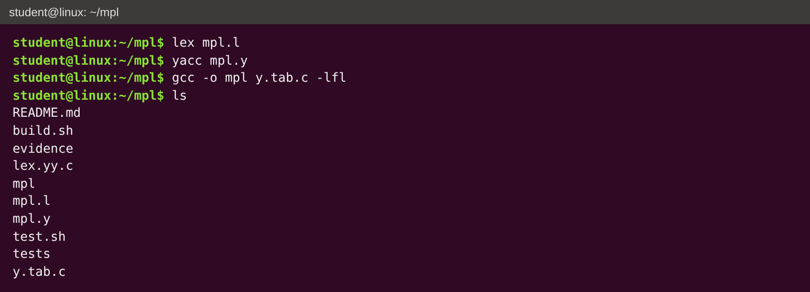
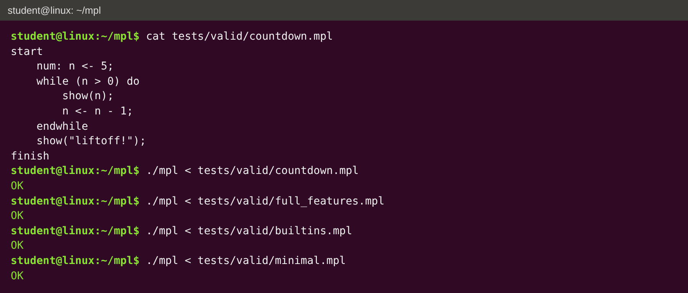
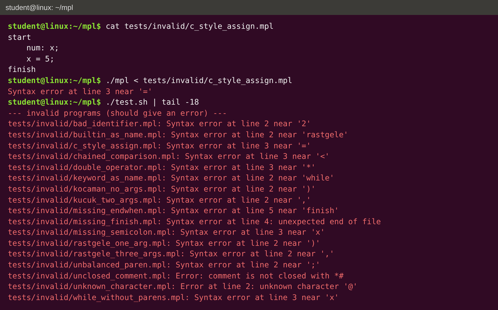

COM2043 Programming Language Concepts, Project 1
Lexical and Syntax Analysis Using Lex and Yacc
Student: ______________________ Student No: ______________
Date: November 2026
In this project I designed a small programming language called MPL and wrote a lexical analyzer (mpl.l) with Lex and a syntax analyzer (mpl.y) with Yacc for it. The analyzer reads an MPL program and prints OK if the program follows the grammar. If it does not, it prints an error message with the line number. As the assignment says, it only checks the syntax: there is no type checking and the programs are not executed.
I tried to make MPL look different from C. For example a program is written between start and finish, assignment is an arrow <-, the if statement is called when, and the logical operators are words (and, or, not). I also added three built-in functions with Turkish names: rastgele, KOCAMAN and kucuk.
start and ends with the keyword finish.;. Block statements end with their own closing keyword (endwhen, endwhile), and repeat ... until (cond); ends with a semicolon.## starts a comment until the end of the line. #* ... *# is a comment that can be over many lines.## a small MPL program
start
num: n <- 5;
while (n > 0) do
show(n);
n <- n - 1;
endwhile
show("liftoff!");
finish
| Type | Meaning | Constants |
|---|---|---|
num | integer | 0, 42 |
real | floating point | 3.14, 25.5 |
letter | one character | 'A', '\n', '\t' |
flag | true / false | yes, no |
text | string | "hello" |
A declaration is the type, a colon, and a list of names separated by commas. Any name can get a starting value with <-. Declarations can be written anywhere a statement can.
num: counter <- 0, limit <- 10, total; real: average, temperature <- 25.5; letter: grade <- 'A'; flag: done <- no; text: name <- "MPL";
Negative numbers are written with unary minus, for example -5. Checking that a variable is declared before it is used is semantic analysis, so it is not done.
A variable name must start with a letter. After that it can have letters, digits and underscores. It can't have spaces, and keywords and built-in names can't be used as variable names. Names are case-sensitive.
[a-zA-Z][a-zA-Z0-9_]*
x <- x + 1; ## assignment show(x, "is the answer"); ## print one or more values ask(a, b); ## read values into variables
| Kind | Operators |
|---|---|
| Arithmetic | + add, - subtract, * multiply, / divide, % modulus, ^ power, unary - |
| Comparison | = equal, <> not equal, <, >, <=, >= |
| Logical | and, or, not |
| Assignment | <- |
Because assignment is <-, the single = is free to be used for "equal to".
| Level | Operators | Associativity |
|---|---|---|
| 1 (highest) | ( ), function calls | - |
| 2 | ^ | right |
| 3 | unary - | right |
| 4 | * / % | left |
| 5 | + - | left |
| 6 | = <> < > <= >= | none (can't be chained) |
| 7 | not | right |
| 8 | and | left |
| 9 (lowest) | or | left |
So arithmetic is done first, then comparisons, then logic. Some examples:
a + b * c means a + (b * c)a - b - c means (a - b) - c (left associative)2 ^ 3 ^ 2 means 2 ^ (3 ^ 2) (right associative, like in maths)-x ^ 2 means -(x ^ 2)a + 1 > b and not c = d means ((a + 1) > b) and (not (c = d))a < b < c is a syntax error, because comparisons are non-associative(a + b) * cThese rules are written in mpl.y with %left, %right and %nonassoc (see section 5.2).
when (total > 100) then
grade <- 'A';
orwhen (total >= 50) then
grade <- 'B';
otherwise
grade <- 'F';
endwhen
The condition is always inside parentheses and is followed by then. After that come zero or more orwhen parts (like "else if"), then an optional otherwise part (like "else"). The statement always ends with endwhen. Since every when has its own endwhen, there is no "dangling else" problem.
while (counter < 10) do repeat
counter <- counter + 1; limit <- limit - 1;
endwhile until (limit <= 0);
while checks the condition before each turn. repeat ... until runs the body first and stops when the condition becomes true. Loops and when statements can be nested inside each other.
| Function | Meaning | Arguments |
|---|---|---|
rastgele(a, b) | random number between a and b ("rastgele" means random) | exactly 2 |
KOCAMAN(t) | text t in upper case ("kocaman" means huge) | exactly 1 |
kucuk(t) | text t in lower case ("küçük" means small) | exactly 1 |
The names are reserved words, so the grammar can check the number of arguments. rastgele(1) or kucuk("a", "b") is a syntax error. They can be used anywhere an expression can, even inside each other: KOCAMAN(kucuk(name)).
| MPL | C | |
|---|---|---|
| Program | start ... finish | int main() { ... } |
| Assignment | x <- 5; | x = 5; |
| Equal / not equal | = / <> | == / != |
| Logic | and or not | && || ! |
| Declaration | num: a, b <- 2; | int a, b = 2; |
| If | when ... orwhen ... otherwise ... endwhen | if ... else if ... else with braces |
| Loops | while ... do ... endwhile, repeat ... until | while, do ... while |
| Comments | ## and #* *# | // and /* */ |
| Power | ^ | none (pow function) |
| Token | Pattern / lexemes |
|---|---|
| Keywords | start finish num real letter flag text yes no when then orwhen otherwise endwhen while do endwhile repeat until show ask and or not |
| Built-in names | rastgele KOCAMAN kucuk |
| IDENT | [a-zA-Z][a-zA-Z0-9_]* |
| INT_CONST | [0-9]+ |
| REAL_CONST | [0-9]+"."[0-9]+ (digits on both sides of the dot) |
| CHAR_CONST | \'(.|\\n|\\t)\' (one character, or \n / \t, in single quotes) |
| STRING_CONST | \"[^"\n]*\" (text in double quotes on one line) |
| Arithmetic | + - * / % ^ |
| Comparison | = <> < > <= >= |
| Logical | and or not |
| Assignment | <- |
| Punctuation | ( ) , ; : |
| Line comment | "##".* (ignored) |
| Block comment | #* ... *# (ignored, done with a start condition) |
| Whitespace | [ \t\r]+ and \n (ignored, new lines are counted) |
The keyword rules are written before the identifier rule in mpl.l. When two rules match the same text, Lex picks the first one, so while becomes the WHILE token and not an IDENT. Lex also always takes the longest match, so <-, <= and <> are read as one token and not as < followed by something else, and 3.5 is one REAL_CONST, not INT_CONST 3. Any other character is a lexical error.
Nonterminals are in < >, terminals are in quotes or are token names. ε means empty.
<program> ::= "start" <stmts> "finish"
<stmts> ::= ε | <stmts> <stmt>
<stmt> ::= <declaration> ";" | <assignment> ";" | <show_stmt> ";"
| <ask_stmt> ";" | <call> ";"
| <when_stmt> | <while_stmt> | <repeat_stmt>
<declaration> ::= <type> ":" <var_list>
<type> ::= "num" | "real" | "letter" | "flag" | "text"
<var_list> ::= <var> | <var_list> "," <var>
<var> ::= IDENT | IDENT "<-" <expr>
<assignment> ::= IDENT "<-" <expr>
<show_stmt> ::= "show" "(" <expr_list> ")"
<ask_stmt> ::= "ask" "(" <id_list> ")"
<id_list> ::= IDENT | <id_list> "," IDENT
<when_stmt> ::= "when" "(" <expr> ")" "then" <stmts> <orwhens> <otherwise> "endwhen"
<orwhens> ::= ε | <orwhens> "orwhen" "(" <expr> ")" "then" <stmts>
<otherwise> ::= ε | "otherwise" <stmts>
<while_stmt> ::= "while" "(" <expr> ")" "do" <stmts> "endwhile"
<repeat_stmt> ::= "repeat" <stmts> "until" "(" <expr> ")" ";"
<builtin> ::= "rastgele" "(" <expr> "," <expr> ")"
| "KOCAMAN" "(" <expr> ")"
| "kucuk" "(" <expr> ")"
<call> ::= IDENT "(" ")" | IDENT "(" <expr_list> ")"
<expr_list> ::= <expr> | <expr_list> "," <expr>
<expr> ::= <expr> "or" <expr> | <expr> "and" <expr> | "not" <expr>
| <expr> "=" <expr> | <expr> "<>" <expr>
| <expr> "<" <expr> | <expr> ">" <expr>
| <expr> "<=" <expr> | <expr> ">=" <expr>
| <expr> "+" <expr> | <expr> "-" <expr>
| <expr> "*" <expr> | <expr> "/" <expr> | <expr> "%" <expr>
| <expr> "^" <expr> | "-" <expr> | "(" <expr> ")"
| <builtin> | <call> | IDENT
| INT_CONST | REAL_CONST | CHAR_CONST | STRING_CONST | "yes" | "no"
The <expr> rule on its own is ambiguous (for example a + b * c could be grouped in two ways). The ambiguity is solved with the precedence and associativity table in section 2.6, which is written in Yacc with precedence declarations. The same language can also be written without ambiguity by using one nonterminal for each level:
<expr> ::= <expr> "or" <and_e> | <and_e>
<and_e> ::= <and_e> "and" <not_e> | <not_e>
<not_e> ::= "not" <not_e> | <cmp>
<cmp> ::= <sum> <relop> <sum> | <sum>
<sum> ::= <sum> "+" <term> | <sum> "-" <term> | <term>
<term> ::= <term> "*" <unary> | <term> "/" <unary> | <term> "%" <unary> | <unary>
<unary> ::= "-" <unary> | <power>
<power> ::= <primary> "^" <unary> | <primary>
<primary> ::= "(" <expr> ")" | <builtin> | <call> | IDENT | <constant>
<relop> ::= "=" | "<>" | "<" | ">" | "<=" | ">="
mpl.l has one rule for every token in section 3. Each rule returns a token name (like WHEN or IDENT) to the parser. Operators made of one character return the character itself, for example '+'. A global variable line_no is increased at every new line, so error messages can show the line. The block comment uses a start condition COMMENT: after #* the lexer skips everything until *#, and if the file ends first it prints an error. A rule with . at the very end catches any character that is not part of MPL.
mpl.y has the token list, the precedence declarations and the grammar rules from section 4. The precedence part is:
%left OR %left AND %right NOT %nonassoc EQ NE LT GT LE GE %left '+' '-' %left '*' '/' '%' %right UMINUS %right '^'
In Yacc the lines further down have higher precedence, and %left / %right / %nonassoc give the associativity. Unary minus uses the same - character as subtraction, so the rule '-' expr %prec UMINUS gives it the higher precedence of the fake token UMINUS. With these declarations Yacc builds the parser with no shift/reduce or reduce/reduce conflicts (I checked with yacc -v).
At the end of mpl.y the line #include "lex.yy.c" puts the lexer into the same C file, so only y.tab.c needs to be compiled. main() calls yyparse() and prints OK if it returns 0.
When the parser finds a token that does not fit the grammar, Yacc calls yyerror(). My yyerror() prints the line number and the token where the error was found, then stops the program. If the file ended too early it says "unexpected end of file". Lexical errors (unknown character, unclosed comment) are printed by the lexer. The analyzer stops at the first error.
Syntax error at line 3 near '=' Syntax error at line 4: unexpected end of file Error at line 2: unknown character '@' Error: comment is not closed with *#
lex mpl.l yacc mpl.y gcc -o mpl y.tab.c -lfl ./mpl < tests/valid/full_features.mpl
The first three lines are also in build.sh. test.sh runs ./mpl on every file in tests/valid and tests/invalid. It was tested on Linux with flex 2.6 and GNU Bison (as lex and yacc) and gcc.
There are 4 valid programs and 17 invalid programs. Every valid program printed OK and every invalid program printed an error at the right line. The source of the valid test programs is in Appendix A and the invalid ones are in Appendix B.
| File | What it tests | Expected | Output |
|---|---|---|---|
| tests/valid/builtins.mpl | valid program | OK | OK |
| tests/valid/countdown.mpl | valid program | OK | OK |
| tests/valid/full_features.mpl | valid program | OK | OK |
| tests/valid/minimal.mpl | valid program | OK | OK |
| tests/invalid/bad_identifier.mpl | Names must start with a letter. 2fast is read as the number 2 then the name fast. | error | Syntax error at line 2 near '2' |
| tests/invalid/builtin_as_name.mpl | rastgele is a reserved built-in name. | error | Syntax error at line 2 near 'rastgele' |
| tests/invalid/c_style_assign.mpl | MPL uses <- for assignment, not =. | error | Syntax error at line 3 near '=' |
| tests/invalid/chained_comparison.mpl | Comparison operators are non-associative. | error | Syntax error at line 3 near '<' |
| tests/invalid/double_operator.mpl | Two operators next to each other. | error | Syntax error at line 3 near '*' |
| tests/invalid/keyword_as_name.mpl | while is a keyword. | error | Syntax error at line 2 near 'while' |
| tests/invalid/kocaman_no_args.mpl | KOCAMAN needs exactly one argument. | error | Syntax error at line 2 near ')' |
| tests/invalid/kucuk_two_args.mpl | kucuk needs exactly one argument. | error | Syntax error at line 2 near ',' |
| tests/invalid/missing_endwhen.mpl | when block is not closed with endwhen. | error | Syntax error at line 5 near 'finish' |
| tests/invalid/missing_finish.mpl | Program does not end with finish. | error | Syntax error at line 4: unexpected end of file |
| tests/invalid/missing_semicolon.mpl | No ; after the declaration on line 2. | error | Syntax error at line 3 near 'x' |
| tests/invalid/rastgele_one_arg.mpl | rastgele needs exactly two arguments. | error | Syntax error at line 2 near ')' |
| tests/invalid/rastgele_three_args.mpl | rastgele needs exactly two arguments. | error | Syntax error at line 2 near ',' |
| tests/invalid/unbalanced_paren.mpl | Missing ). | error | Syntax error at line 2 near ';' |
| tests/invalid/unclosed_comment.mpl | Block comment is never closed with *# (lexical error). | error | Error: comment is not closed with *# |
| tests/invalid/unknown_character.mpl | @ is not part of MPL (lexical error). | error | Error at line 2: unknown character '@' |
| tests/invalid/while_without_parens.mpl | The condition of while must be inside parentheses. | error | Syntax error at line 3 near 'x' |
Building the analyzer:

Running valid programs:

Running invalid programs:

MPL meets all the minimum requirements of the assignment: it has a program structure, a regular expression for identifiers, five data types, declarations with initialization, six arithmetic operators, three logical operators, six comparison operators, precedence and associativity rules in Yacc, a conditional statement with else-if and else parts, two kinds of loops, and a complete grammar. On top of that I added the orwhen part, the repeat ... until loop, input/output statements, and three built-in functions. The lexer and parser work on all the test programs.
tests/valid/builtins.mpl
## testing my functions
start
num: zar <- rastgele(1, 6);
num: big <- rastgele(10, 20) * 2 + rastgele(-5, zar);
text: name <- "Big Man";
text: loud <- KOCAMAN(name), quiet <- kucuk(name);
loud <- KOCAMAN(kucuk("MiXeD"));
when (rastgele(0, 1) = 1 and KOCAMAN(name) <> name) then
show(KOCAMAN("heads"));
otherwise
show(kucuk("TAILS"));
endwhen
finish
tests/valid/countdown.mpl
start
num: n <- 5;
while (n > 0) do
show(n);
n <- n - 1;
endwhile
show("liftoff!");
finish
tests/valid/full_features.mpl
## full test, uses everything in MPL
start
## declarations: several names, optional starting value
num: counter <- 0, limit <- 10, total;
real: average <- 0.0, temperature <- 25.5;
letter: grade <- 'A', newline <- '\n';
flag: done <- no, ready <- yes;
text: name <- "MPL";
ask(total, temperature);
## arithmetic with precedence, parentheses, power, modulus, unary minus
total <- (counter + limit) * (total - 5) / 2 % 7;
average <- -temperature ^ 2 + 3.75 * -(limit - 1);
## when / orwhen / otherwise
when (total > 100 and not done) then
grade <- 'A';
show("big total: ", total);
orwhen (total >= 50 or average <> 0.0) then
grade <- 'B';
orwhen (total = 0) then
grade <- 'C';
otherwise
grade <- 'F';
endwhen
## while loop with a nested when
while (counter < limit) do
counter <- counter + 1;
when (counter % 2 = 0) then
show(counter);
endwhen
endwhile
## repeat-until loop
repeat
limit <- limit - 1;
until (limit <= 0 or done = yes);
show(name, grade, average);
finish
tests/valid/minimal.mpl
## smallest program start finish
tests/invalid/bad_identifier.mpl
start
num: 2fast <- 3;
finish
tests/invalid/builtin_as_name.mpl
start
num: rastgele <- 4;
finish
tests/invalid/c_style_assign.mpl
start
num: x;
x = 5;
finish
tests/invalid/chained_comparison.mpl
start
num: a <- 1, b <- 2;
flag: f <- a < b < 3;
finish
tests/invalid/double_operator.mpl
start
num: x <- 1;
x <- x * * 2;
finish
tests/invalid/keyword_as_name.mpl
start
num: while <- 3;
finish
tests/invalid/kocaman_no_args.mpl
start
text: t <- KOCAMAN();
finish
tests/invalid/kucuk_two_args.mpl
start
text: t <- kucuk("A", "B");
finish
tests/invalid/missing_endwhen.mpl
start
num: x <- 1;
when (x > 0) then
show(x);
finish
tests/invalid/missing_finish.mpl
start
num: x <- 1;
x <- x + 1;
tests/invalid/missing_semicolon.mpl
start
num: x <- 5
x <- x + 1;
finish
tests/invalid/rastgele_one_arg.mpl
start
num: x <- rastgele(1);
finish
tests/invalid/rastgele_three_args.mpl
start
num: x <- rastgele(1, 2, 3);
finish
tests/invalid/unbalanced_paren.mpl
start
num: x <- (3 + 4;
finish
tests/invalid/unclosed_comment.mpl
start
#* never closed
num: x;
finish
tests/invalid/unknown_character.mpl
start
num: x <- 1 @ 2;
finish
tests/invalid/while_without_parens.mpl
start
num: x <- 1;
while x < 3 do
x <- x + 1;
endwhile
finish